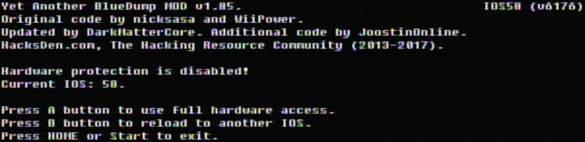
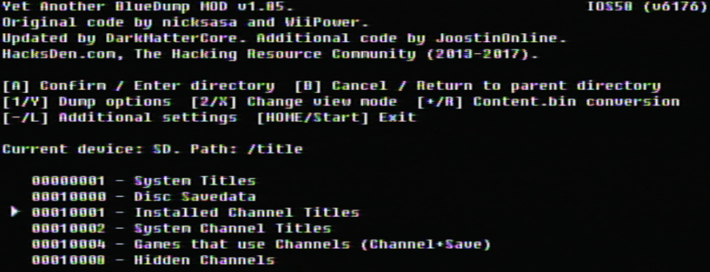
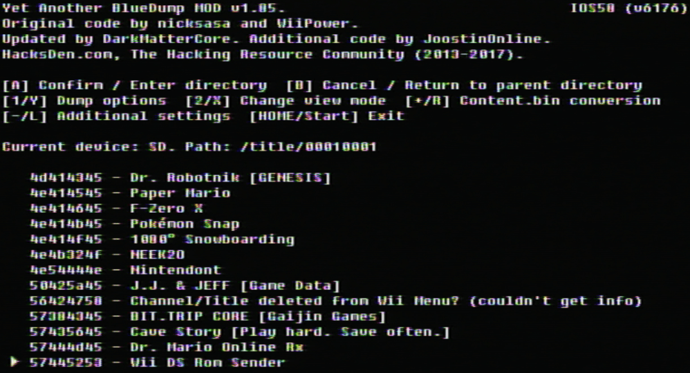
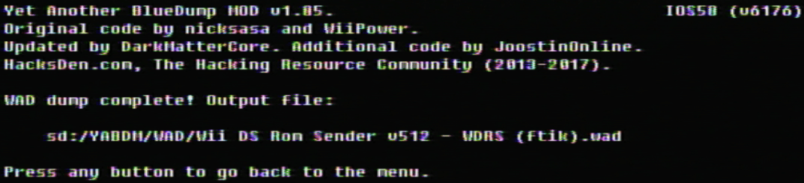

转储WAD
如果需要中文帮助，国内用户可以添加QQ群：417992332。
如果你需要有关本教程的任何帮助, 请加入RiiConnect24 Discord服务器 (推荐)或 发送电子邮件到 [email protected]。
本教程将向您解释如何从Wii系统内存中转储WAD。
需要
- 一张SD卡或U盘
- Yet Another BlueDump MOD
步骤
第一节 - 下载/安装
- 将Yet Another BlueDump MOD解压到SD卡或U盘。
- 将SD卡或U盘插入Wii，从Homebrew Channel启动Yet Another BlueDump MOD。
第二节 - 转储
-
请按A键。 
-
选择
Installed Channel Titles。  -
找到要转储的内容，按1。 
- 选择
Backup to WAD。 - 在提示
Fakesign the ticket时，选择Yes。 - 在提示
Fakesign the TMD时，选择No。 - 在提示
Change the output WAD region时，选择No。
你现在已经转储了WAD。 它应该出现在SD卡上。 